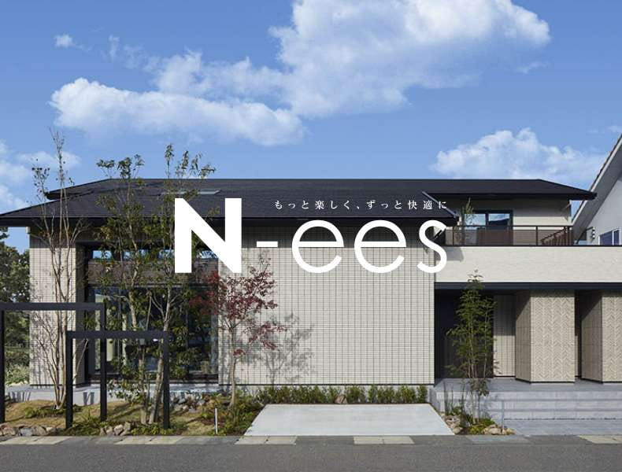
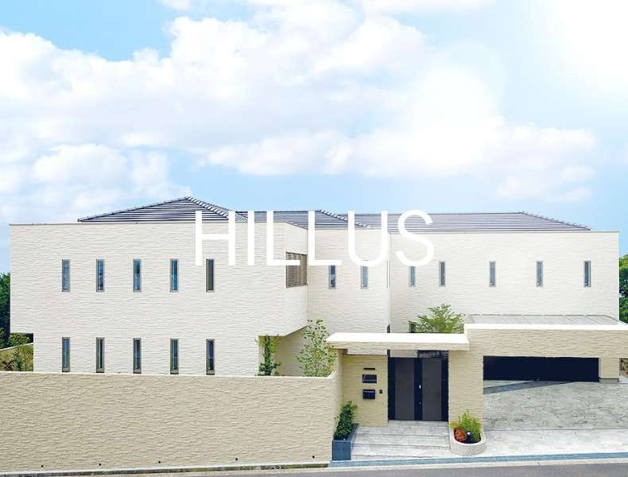
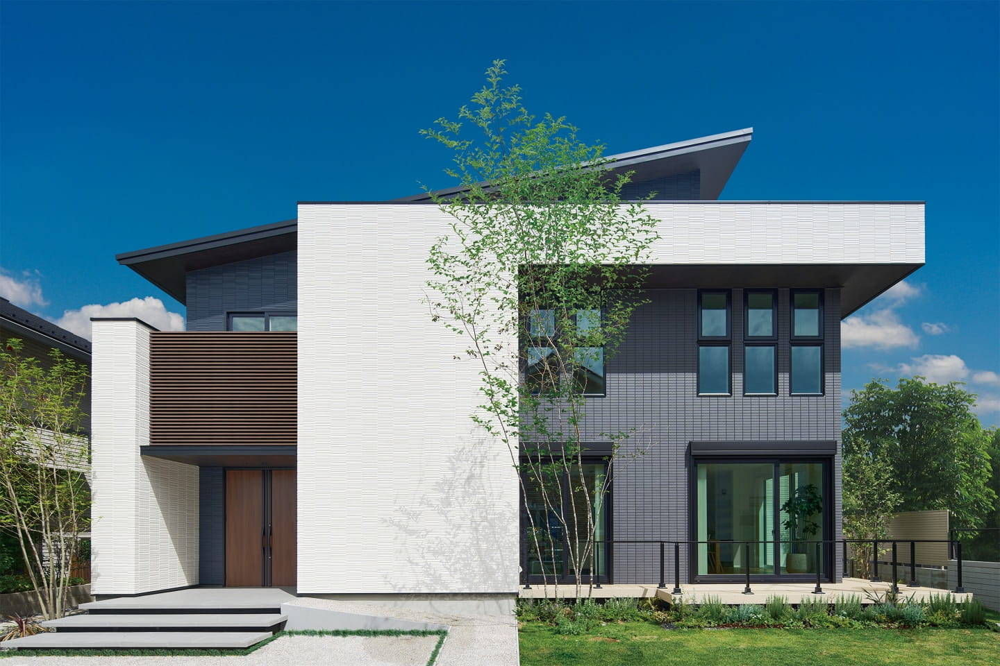
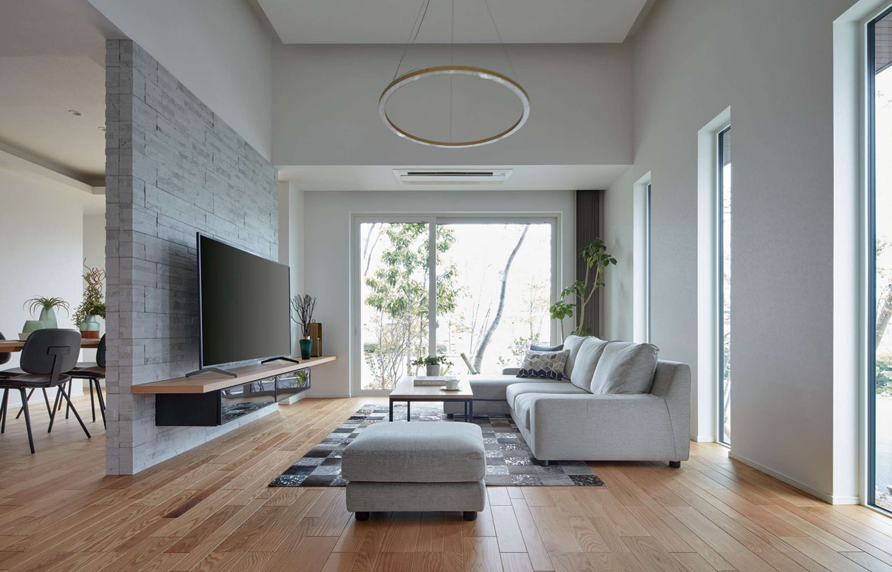
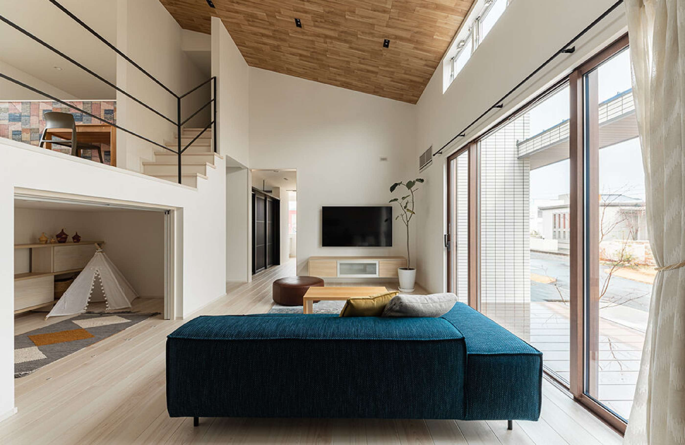
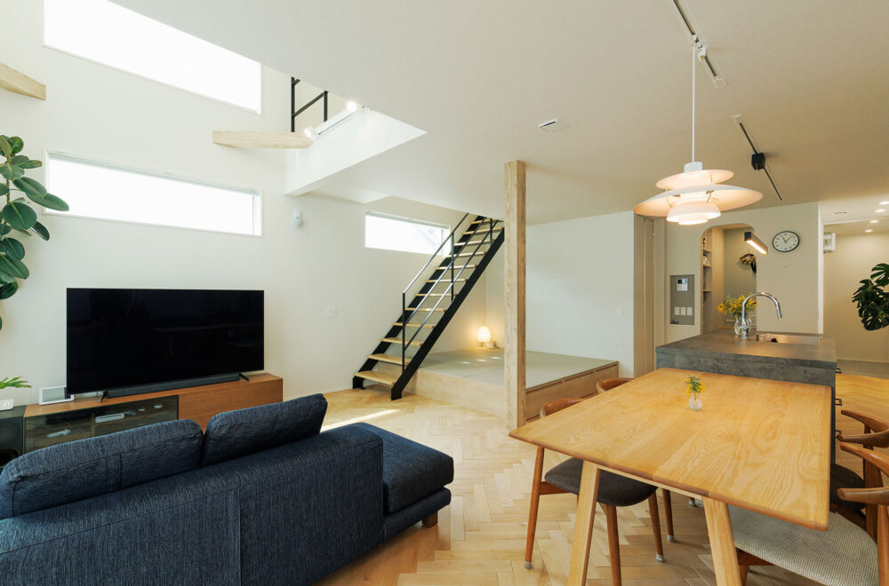
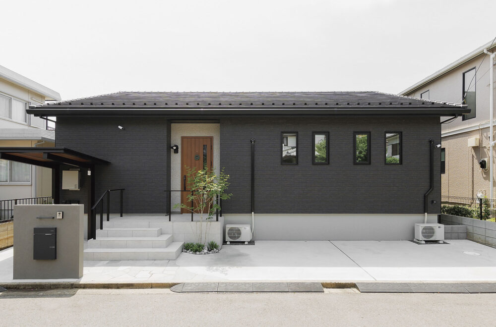
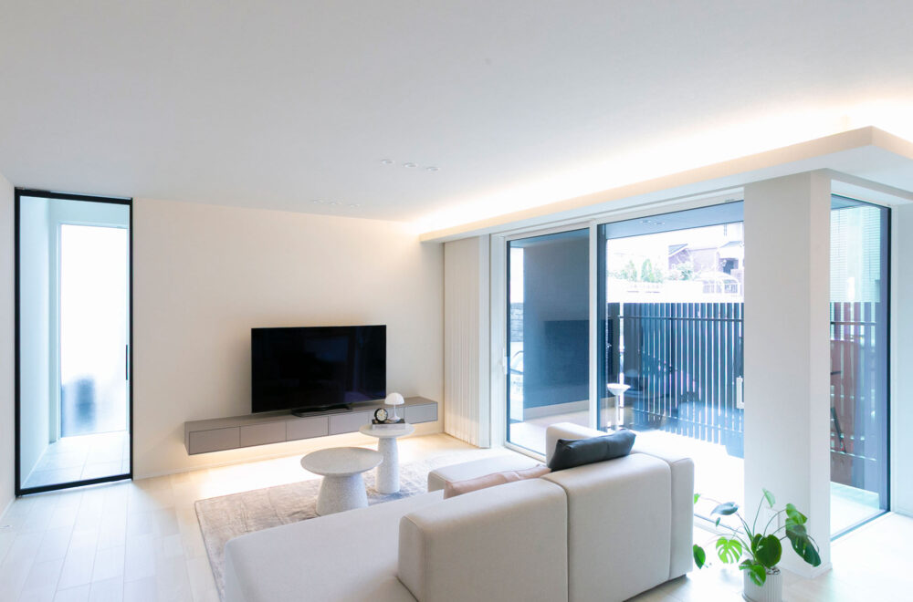
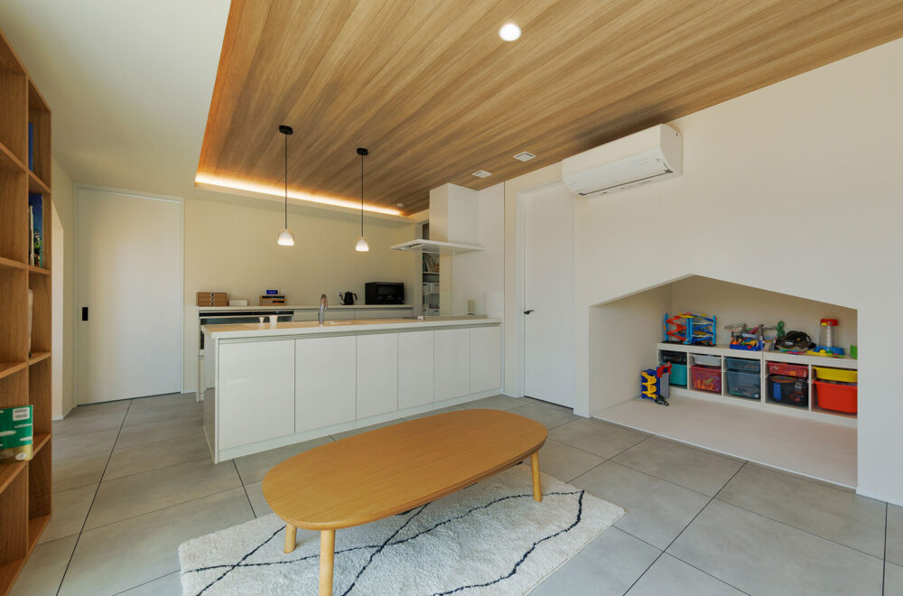

① 会社・基本データ
アイ工務店は2010年7月設立、創業から約15年でグループ売上2,000億円超・全国47都道府県進出を達成した急成長中堅ハウスメーカー。創業者の田中亘会長はミサワホーム→アキュラホーム出身、坂井達也社長もミサワホーム出身で、営業・マネジメント手法に大手HM出身者の色が濃く出ているのが特徴。
| 項目 | 内容 |
|---|---|
| 会社名 | 株式会社アイ工務店 |
| 設立 | 2010年7月 |
| 代表者 | 田中 亘（代表取締役会長・創業者）／坂井 達也（代表取締役社長） |
| 本社 | 大阪府大阪市北区梅田1丁目13番1号 大阪梅田ツインタワーズ・サウス15階（2025年8月25日移転） |
| 資本金 | 1億円 |
| 売上高 | 2,010億円（2025年6月期／15期） |
| 経常利益 | 約220億円（2025年6月期） |
| 従業員数 | 3,112名（2026年4月現在、出典: マイナビ2027） |
| 年間引渡戸数 | 5,549棟（2025年6月期）／契約8,581棟／2026年6月期目標 引渡8,000棟 |
| 拠点数 | 全国47都道府県 302か所（2025年10月時点、アイスタジオ含む） |
| 全国展開 | 2025年10月に47都道府県進出達成 |
| 成長率 | 創業10年で売上高成長率 住宅会社No.1（東京商工リサーチ） |
一言で言うと？
「自由設計の高品質注文住宅を適正価格で実現する」をスローガンに、1cm刻みの自由設計と高気密・高断熱・制震を標準化しながら、大手より3割安い価格帯で提供する中堅ハウスメーカー。コスパ重視・30〜40代ファミリー層から支持を集める。
ARCHIST視点：勢いがある一方、わずか15年で全国302拠点まで拡大した影響で「急成長の歪み」は否めない。担当者・現場の品質ムラ、下請け管理の問題、見積もり精度のばらつきなどが施主ブログ・SNSで指摘されている。勢いの良いHMを選ぶなら、それに見合ったリスクヘッジが必要。
② 商品ラインナップと坪単価
2026年4月時点の公式サイト現行ラインナップは「N-ees（ニーズ）」「HILLUS（ヒルズ）」の2本のみ。
| 商品名 | 坪単価目安（2026年） | 構造 | 主な特徴 |
|---|---|---|---|
| N-ees | 75〜95万円 | 木造軸組＋金物工法 | 2023年発売の主力商品。2025年9月大幅リニューアルでUA値0.28標準化・AIダンパー標準化 |
| HILLUS | 90〜130万円 | 木造軸組＋金物工法 | フルオーダー高級ブランド。モデルハウスは兵庫県のみ |


注意：「N-ees Premium」「悠々」「Praie」「EURIE」「Avist」「NeCTAR」「Eclat」等は、2026年4月時点の公式サイト現行ラインナップには存在しない。過去に地域限定・期間限定商品として展開された経緯はあるが、現在は「N-ees / HILLUS」の2本体制に統合されている。他社比較サイトや古い情報記事に商品名が残っていても、新規契約対象ではない点に注意。
坪単価の分布（2026年・N-ees中心）
| データソース | 平均坪単価 | 備考 |
|---|---|---|
| 不動産売却マイスター | 約89.5万円 | 諸費用込み |
| HOME4U家づくりのとびら | 約74.4万円 | 本体工事費 |
| Tateruya | 約68.5万円 | 本体工事費 |
| おうちキャンバス | 65〜92万円 | 実例分布 |
| ハウスメーカー大学 | 66.3万円/坪 | 30〜40坪平均・実績ベース |
坪単価の推移（N-ees基準・概算）
| 年 | 坪単価目安 | 備考 |
|---|---|---|
| 2020年 | 約55〜65万円 | ウッドショック前 |
| 2022年 | 約60〜75万円 | 資材高騰で値上げ |
| 2023年 | 約65〜80万円 | N-ees発売 |
| 2025年 | 約70〜90万円 | 9月にN-ees新仕様で性能大幅向上 |
| 2026年 | 約75〜95万円（平均）／ 89.5万円（諸費用込み） | 性能向上に伴う上昇 |
ARCHIST視点：「坪単価65万円」の情報が残っているが、2025年9月のN-ees新仕様以降は実質的に70〜80万円台がボリュームゾーン。2026年契約なら「坪単価75〜85万円（本体）／ 90〜95万円（諸費用込み）」を想定するのが現実的。
③ 構造・工法
木造軸組工法＋金物工法のハイブリッド
アイ工務店の主力構造は「木造軸組工法」をベースに、接合部に金物を使う「金物工法（プレセッター工法系）」を組み合わせたハイブリッド。
| 項目 | 詳細 |
|---|---|
| 主構造 | 木造軸組工法（在来工法） |
| 接合 | 金物工法（プレカット仕口＋金物接合） |
| 面材補強 | 構造用合板（ツーバイフォー系面材）併用 |
| 床 | 28mm厚 オリジナル構造用MDF「AIボード28」による剛床工法（床倍率3、業界最大厚） |
| 基礎 | ベタ基礎（立上り幅170mm、一般的な150mmより厚い） |
| 基礎コンクリート強度 | 30N/㎟・弾性基礎仕上材で中性化進行を10分の1以下に抑制・70年長期保証対応 |
| 防火 | 省令準耐火構造（標準対応） |
AIダンパー Dual Shield（2025年9月〜全棟標準化）
アイ工務店オリジナルの制震ダンパー「AIダンパー Dual Shield」が2025年9月から全棟標準搭載となった。
| 項目 | 内容 |
|---|---|
| 方式 | 摩擦式ダンパー（フェノール樹脂＝自動車ブレーキ素材を使用し、摩擦熱でエネルギーを吸収） |
| 機能 | 通常時は最大壁倍率5倍の耐力壁、大地震時は制震ダンパーとして揺れエネルギーを熱に変換・放出 |
| 効果 | 繰り返される余震にも効果を発揮。構造へのダメージ蓄積を抑制 |
| 標準化 | 2025年9月以降の契約から全棟標準（従来はオプション） |
1cm刻みの自由設計（パーソナルモジュール）
アイ工務店の代名詞とも言える設計自由度。「尺モジュール（91cm）」「メーターモジュール（100cm）」に加え、「パーソナルモジュール」で1cm単位の間取り調整が可能。
- 他社は「0.5マス（45cm）単位」「3尺（91cm）単位」が一般的
- 1cm刻みは業界でもトップクラスの自由度
- 「0.5マスでは収まらないニッチな収納」「1.5cm足した絶妙な廊下幅」等が実現可能
ARCHIST視点：工法自体はオーソドックス（軸組＋金物＋面材）で独自性は低いが、「1cm刻み自由設計」「AIダンパー標準」「28mm剛床」の組み合わせで高性能を実現。特に自由設計の自由度は一条工務店の0.5マス制約とは対極にあり、「間取りにこだわりたい施主」にはアイ工務店が刺さる。
④ 耐震性能
耐震等級3（標準）
| 項目 | 内容 |
|---|---|
| 耐震等級 | 3 標準装備（建築基準法の1.5倍、消防署・警察署と同等・公式表記） |
| モノコック化 | 28mm剛床（AIボード28）＋面材耐力壁で6面体ボックス構造 |
| 制震装置 | AIダンパー Dual Shield 全棟標準（2025年9月〜） |
| 基礎 | 立上り幅170mm、30N/㎟コンクリート、ベタ基礎標準 |
| 基礎寿命 | 70年長期保証対応（公式記載） |
耐震等級3「相当」と「取得」の違い
| 区分 | 内容 |
|---|---|
| 等級3相当 | 構造計算上は同等レベルだが、住宅性能評価書の認定を取得していない |
| 等級3取得 | 住宅性能評価機関による公式認定を取得している |
| 影響 | 地震保険料の50%割引、フラット35金利優遇、住宅ローン減税の長期優良住宅控除枠は認定取得が必須 |
アイ工務店は「耐震等級3 標準装備」と公式表記しており、等級3相当の構造は標準で備わっている。ただし住宅性能評価書による認定書の取得は別途申請が必要で、長期優良住宅・地震保険50%割引・フラット35金利優遇等に使うには申請費用（20〜40万円程度）がかかる。営業担当に「認定書を取得しますか？」と確認を。
実大実験の実績
大手HM（一条・積水・ヘーベル）のようなE-ディフェンスでの実大振動実験の公開実績は少ない。AIダンパーの効果検証は振動台実験で実施されているが、「建物全体を阪神大震災の○倍で加振して無損傷」といった派手なデータは一条工務店ほど蓄積していない。
ARCHIST視点：耐震等級3＋AIダンパー標準は中堅HMとしては十分なスペック。ただし「建物全体の実大振動実験データ」は一条工務店に軍配が上がる。地震への安心感を「データの厚み」で求める施主は、一条工務店との比較が必要。
⑤ 断熱性能
UA値（外皮平均熱貫流率）
2025年9月のN-ees新仕様で大幅に強化された。従来のUA値0.4〜0.5 → 全国一律UA値0.28へ。断熱等性能等級6＋HEAT20 G2レベルを標準化。
| 商品 | UA値（2026年） | 断熱等級 |
|---|---|---|
| N-ees（2025年9月新仕様〜） | 0.28 W/㎡K以下（全国一律） | 等級6〜7 |
| HILLUS | 0.28〜0.35 W/㎡K | 等級6 |
| （参考）国の省エネ基準 | 0.87 W/㎡K | 等級4 |
断熱仕様の詳細（N-ees 2025年新仕様）
| 部位 | 断熱材・仕様 |
|---|---|
| 外壁（外張り） | フェノールフォーム 45mm |
| 外壁（充填） | 硬質発泡ウレタン 100mm |
| 屋根 | 硬質発泡ウレタン 300mm＋遮熱ボード「クールアイ」併用 |
| 床 | 押出法ポリスチレンフォーム |
| 窓サッシ | オール樹脂サッシ（YKK AP APW430等）標準 |
| ガラス | Low-Eトリプルガラス（アルゴンガス入り）標準 |
| 玄関ドア | 高断熱仕様ドア標準 |
他社との断熱性能比較（2026年）
| ハウスメーカー | UA値代表値 | 等級 | 標準サッシ |
|---|---|---|---|
| 一条工務店 i-smart | 0.25 | 7 | 樹脂＋トリプル |
| アイ工務店 N-ees（新仕様） | 0.28 | 6〜7 | オール樹脂＋Low-Eトリプル |
| タマホーム 笑顔の家 | 0.23 | 7 | 樹脂 |
| 三井ホーム | 0.43 | 5〜6 | アルミ樹脂複合 |
| 住友林業 | 0.46 | 5 | アルミ樹脂複合 |
| 積水ハウス（木造） | 0.46〜0.60 | 5 | アルミ樹脂複合 |
| ヘーベルハウス（鉄骨） | 0.55〜0.60 | 5 | アルミ樹脂複合 |
ARCHIST視点：2025年9月の新仕様で、アイ工務店の断熱性能は「一条工務店とほぼ同等レベル」に到達。坪単価75〜85万円（一条は85〜105万円）で同等性能を得られるため、コスパでは一条工務店を上回る。ただし「2025年9月以前の契約」のN-eesは UA値0.4〜0.5 だったため、契約時期によって性能が異なる点は重要な注意点。
⑥ 気密性能
C値（相当隙間面積）
| 項目 | 数値 |
|---|---|
| 約束値（仕様書記載） | C値 0.5 cm²/m² 以下（公式記載） |
| 平均実測値 | C値 0.32 cm²/m²（公式記載） |
| 全棟気密測定 | 標準実施（2025年以降） |
| 実測値報告 | 施主に測定報告書を発行 |
他社との気密性能比較
| ハウスメーカー | C値（公表データ） | 全棟測定 |
|---|---|---|
| 一条工務店 | 0.59（全棟平均） | 全棟実施 |
| アイ工務店（N-ees） | 平均 0.32 / 保証 0.5以下 | 全棟実施 |
| タマホーム | 非公表 | 実施せず |
| 住友林業 | 非公表 | 希望者のみ |
| 積水ハウス | 非公表 | 実施せず |
| 三井ホーム | 非公表 | 希望者のみ |
| ヘーベルハウス | 非公表 | 実施せず |
大手HMでC値を明記＋全棟測定しているのは一条工務店・アイ工務店・タマホーム（笑顔の家）など限られる。アイ工務店は「中堅HMの中で気密性能を開示しているトップクラス」。
ARCHIST視点：C値0.5以下は高気密水準（一般的には1.0以下で高気密）。気密性能は「施工者の腕」に依存するため、全棟測定を標準化していることが大きな意味を持つ。「性能を数字で約束してくれるHM」という安心感は、中堅HMの中では突出している。
⑦ 換気・空調
第1種換気（熱交換型）が基本
| 項目 | 内容 |
|---|---|
| 換気方式 | 第1種換気（熱交換型）が基本 |
| 熱交換効率 | 60〜80%程度（機種により異なる） |
| フィルター | 花粉・PM2.5対応（機種オプションあり） |
| メンテナンス | フィルター清掃 2〜3ヶ月に1回目安 |
高気密＋第1種換気の効果
- 計画換気が機能することで、室内空気質が安定
- 花粉・PM2.5の侵入を抑制
- 熱交換で冷暖房効率が向上（冬の暖かい空気を捨てずに換気）
ZEH対応
| 項目 | 内容 |
|---|---|
| ZEHビルダー認定 | 取得済み |
| ZEH達成率 | 公式数値は非公開だが、N-ees新仕様は標準でZEH基準をクリア |
| 太陽光対応 | オプション搭載可能 |
| 補助金 | 子育てエコホーム支援事業・LCCM住宅整備推進事業等に対応可能 |
UA値0.28（N-ees新仕様）はZEH基準（0.6以下）を大幅にクリアしており、太陽光発電との組み合わせでZEH認定取得が容易。補助金活用（子育てエコホーム支援事業: 最大100万円、長期優良住宅化リフォーム推進事業、地域型グリーン化事業等）を含めた総額比較を検討すべき。
遮音性
| 項目 | 内容 |
|---|---|
| 工法の影響 | 木造軸組のため、鉄骨・ALC系（ヘーベル）より遮音は若干劣る傾向 |
| 気密性の恩恵 | C値0.5以下の高気密施工により外部騒音は一定レベルでカット |
| 複層ガラス | Low-Eトリプルガラス＋樹脂サッシで窓からの騒音侵入を抑制 |
| 遮音オプション | 室内防音（ピアノ室・シアタールーム）はオプション対応 |
⑧ デザイン
強み：シンプルモダン×自然素材×自由設計
アイ工務店の外観はホワイト系・ネイビー系・木目調のシンプルな外壁が中心。内装は自然素材を活かした温かみのあるデザイン。1cm刻みの自由設計で縦横のデザイン自由度が高い。



施工事例（公式）




外壁
| 項目 | 内容 |
|---|---|
| 標準 | サイディング（窯業系・金属系から選択） |
| オプション | 塗り壁、タイル外壁 |
| メンテナンス周期 | 10〜15年で塗り替え（サイディングの場合） |
一条工務店の「ハイドロテクトタイル標準（塗り替え不要）」のような外壁メンテナンスフリー系は標準ではない。長期的なメンテコストを抑えたい施主はタイル外壁オプションを検討。
内装
| 設備 | 標準 |
|---|---|
| キッチン | LIXIL / クリナップ / TOTO等 大手メーカー選択制 |
| バス | LIXIL / TOTO / Panasonic等 大手メーカー選択制 |
| 洗面台 | 大手メーカー選択制 |
| フローリング | 複合フローリング標準。無垢フローリングはオプション |
一条工務店との大きな違い：一条は「グレイスシリーズ等の自社オリジナル設備」縛りだが、アイ工務店は大手メーカーの汎用設備から選べる。将来の交換・修理もしやすい。
ARCHIST視点：ヘーベルや積水ハウスほどのブランド的個性は強くないが、「自由設計＋自然素材＋大手メーカー設備選択制」の組み合わせで「自分の好みを反映しやすいHM」としての強みがある。モデルハウスでの標準仕様確認が重要。
⑨ 保証・アフターサービス
保証体系（2025年以降の新標準）
| 内容 | 期間 | 条件 |
|---|---|---|
| 構造耐力上主要な部分 | 初期30年（旧20年から延長） | 10年目・20年目の有償メンテナンス不要（定期点検のみ） |
| 雨水の侵入を防止する部分 | 初期30年 | 同上 |
| 設備機器 | 10年 | メーカー保証準拠 |
| 地盤保証 | 20年 | 地盤調査・改良工事施工時 |
| シロアリ保証 | 10年 | 延長可能 |
| 最長保証 | 最長70年（有償メンテナンス継続で延長） | 恒久工事の実施が条件 |
定期点検スケジュール
引渡し後: 3ヶ月 → 1年 → 2年 → 5年 → 10年 → 15年 → 20年 → 以降5年ごと最大70年まで
大手との比較ポイント
| HM | 初期保証（構造） | 最大延長 | 10年目メンテ |
|---|---|---|---|
| アイ工務店 | 30年 | 70年 | 不要 |
| 一条工務店 | 30年 | 30年 | 有償必要 |
| 住友林業 | 30年 | 60年 | 有償必要 |
| 積水ハウス | 30年 | 永年 | 有償必要 |
| ヘーベルハウス | 30年 | 60年 | 有償点検 |
| タマホーム | 10年 | 60年 | 有償必要 |
アイ工務店の保証の強み：「初期30年間は10年目・20年目の有償メンテナンス不要」は業界でも珍しい。大手HMは多くが「10年ごとに数十万円の有償メンテが保証継続の条件」となっている。
懸念点
オリコン顧客満足度調査ではアフターサービス・保証は4.1点（他項目の4.7点より低め）。実際の対応スピード・品質にばらつきがある点は施主ブログでも指摘されている。保証期間の長さと実運用品質は別問題として捉える必要がある。
ARCHIST視点：「初期30年メンテフリー」は数字上のコストメリットが大きい。ただし急成長企業ゆえの組織的なアフター対応力にはまだ課題が残る（担当者レベルでのばらつきが施主ブログで指摘されている）。契約前に「アフター部門の体制」「担当者配置」も確認しておきたい。
⑩ 建築期間
| フェーズ | 期間目安 |
|---|---|
| 展示場見学〜仮契約 | 1〜2ヶ月 |
| 仮契約〜本契約（間取り打合せ） | 2〜4ヶ月 |
| 本契約〜着工（詳細設計・確認申請） | 1〜3ヶ月 |
| 着工〜上棟 | 1〜2ヶ月 |
| 上棟〜引渡し | 3〜5ヶ月 |
| 合計（初回来場〜引渡し） | 約6〜10ヶ月〜16ヶ月 |
| 着工〜引渡し | 4〜6ヶ月 |
工期遅延リスク
- 繁忙期（春・秋）は着工待ちが発生するケースあり
- 下請け大工・業者の確保状況で変動
- 2025年以降は全国展開加速で慢性的な工事管理負荷が指摘されている
対策
- 契約書に「引渡し予定日の明記＋遅延時の対応」を盛り込む
- 着工前に「工程表の書面確認」
- 引渡し時期を「余裕を持って家賃・引越しと調整」
営業攻略のポイント
| 特徴 | 内容 |
|---|---|
| 社風 | 創業者・社長ともにミサワホーム出身。営業手法に大手HM出身者の色が強い |
| 距離感 | 親身で距離が近い（「押し付けでない」というポジティブな声） |
| スピード | 「契約までが早い」という声が多数。仮契約金（10〜100万円）で押さえる運用 |
| 値引き | 値引きは比較的柔軟。他社相見積もりで数十万〜100万円以上値引きされるケースあり |
| 担当者差 | 急成長で人材育成が追いつかず、担当者による差が大きい |
値引き交渉の相場
- 他社相見積もり提示で 3〜5%（100〜200万円）
- 決算期・期末セール期で 5〜8%（200〜300万円）
- 法人提携・親族紹介で 1.5〜2% 別途
⑪ 客層・向き不向き
典型的な施主プロファイル
| 属性 | 傾向 |
|---|---|
| 年齢 | 30〜40代中心 |
| 世帯構成 | 共働き子育てファミリー多数 |
| 世帯年収 | 600〜900万円がボリュームゾーン |
| 最低年収目安 | 世帯年収500万円〜（N-ees 30坪クラス） |
| 価値観 | 性能×価格のバランス重視 |
| 情報収集 | YouTube・Instagram・施主ブログで徹底比較。「一条工務店と比較する層」が多い |
向いている人
- 高断熱・高気密を大手より3割安い価格で実現したい
- 一条工務店と比較しているが、間取りの自由度も諦めたくない
- 自由設計にこだわりたい（1cm刻みで細部を詰めたい）
- 30〜40代・子育て世代・省エネ意識が高い
- ランニングコスト（光熱費）を長期で抑えたい
- ZEH補助金・長期優良住宅の認定を活用したい
- 大手メーカー設備（LIXIL・TOTO等）を選びたい
向いていない人
- ブランド力・知名度を最優先（→積水ハウス・住友林業）
- 施工品質に絶対的な安心感を求める（→歴史のある大手）
- 工期ぴったりで建てたい（→遅延リスクあり）
- 大空間・特殊な構造にこだわる（→軸組の制約）
- 実大振動実験データの豊富さで選びたい（→一条工務店）
- アフターサービスの盤石さを求める（→積水・ヘーベル）
⑫ 他社比較表
総合比較表
| 比較 | アイ工務店 | 一条工務店 | タマホーム | クレバリーホーム | アキュラホーム | ヘーベルハウス |
|---|---|---|---|---|---|---|
| 坪単価 | 75〜95万円 | 85〜105万円 | 50〜80万円 | 60〜85万円 | 55〜80万円 | 90〜120万円 |
| UA値 | 0.28 | 0.25 | 0.23〜0.60 | 0.46〜0.6 | 0.4〜0.6 | 0.55〜0.60 |
| C値 | 0.5以下 | 0.59 | 非公表 | 非公表 | 非公表 | 非公表 |
| 構造 | 木造軸組＋金物 | 木造2×6 | 木造軸組 | 木造軸組 | 木造軸組 | 鉄骨（ALC） |
| 設計自由度 | ◎（1cm刻み） | △（0.5マス） | ○ | ○ | ◎（大空間） | ○ |
| 標準制震 | ◎（AIダンパー） | - | - | - | - | - |
| 保証（初期） | 30年 | 30年 | 10年 | 10〜30年 | 10年 | 30年 |
| 保証（最大） | 70年 | 30年 | 60年 | 60年 | 60年 | 60年 |
| 10年メンテ | 不要 | 必要 | 必要 | 必要 | 必要 | 必要 |
アイ工務店 vs 一条工務店（最も比較される組合せ）
| 比較軸 | アイ工務店 | 一条工務店 |
|---|---|---|
| 断熱 UA値 | 0.28（新仕様・全国一律） | 0.25（i-smart標準） |
| 気密 C値 | 0.5以下 | 0.59（全棟平均） |
| 設計自由度 | ◎（1cm刻み・自由設計） | △（0.5マス・一条ルール） |
| 価格（30坪総額） | 2,500〜2,900万円 | 2,900〜3,300万円 |
| 値引き | ○（交渉可） | ×（定価販売） |
| 設備選択 | ○（大手メーカー選択制） | △（オリジナル縛り） |
| 実大実験データ | △ | ◎（253回の実験実績） |
| 全館床暖房 | オプション | 標準 |
| 向く人 | 自由な間取り＋大手メーカー設備で性能も欲しい | 規格内でOK・最高性能と実験データで選びたい |
アイ工務店 vs タマホーム
| 比較軸 | アイ工務店 | タマホーム |
|---|---|---|
| 価格 | 75〜95万円/坪 | 50〜80万円/坪 |
| 断熱 | ◎（0.28・全国一律） | ○（笑顔の家なら0.23） |
| 気密 | 0.5以下（全棟） | 非公表 |
| 自由設計 | ◎（1cm刻み） | ○（尺モジュール） |
| 標準仕様 | 充実（AIダンパー標準） | 地域・商品で差 |
| 向く人 | 予算＋1〜2割上乗せで性能アップしたい | 予算最優先・コスパ最重視 |
アイ工務店 vs クレバリーホーム
| 比較軸 | アイ工務店 | クレバリーホーム |
|---|---|---|
| 強み | 断熱・気密・自由設計 | タイル外壁標準でメンテフリー |
| UA値 | 0.28 | 0.46〜0.6 |
| 外壁 | サイディング標準 | タイル外壁標準 |
| 坪単価 | 75〜95万円 | 60〜85万円 |
| 向く人 | 性能＋間取り重視 | 外壁メンテコストを長期で抑えたい |
アイ工務店 vs ヘーベルハウス
| 比較軸 | アイ工務店 | ヘーベルハウス |
|---|---|---|
| 構造 | 木造 | 鉄骨（重量鉄骨）＋ALC |
| 断熱 | ◎ | △（鉄骨は熱橋問題） |
| 耐火性 | ○ | ◎（ALC板耐火性最高クラス） |
| 耐久性 | ○ | ◎（60年保証・ロングライフ思想） |
| 坪単価 | 75〜95万円 | 90〜120万円 |
| 向く人 | 性能・コスパ・自由設計重視 | 都市部の3階建て・耐火・耐久重視 |
⑬ 後悔事例・デメリット
後悔1：営業担当の当たり外れが大きい
「契約を急かされた」「後から見積もり誤りが発覚した」等の声あり。担当者により対応品質に大きな差（急成長で人材育成が追いつかない）。中には「丁寧で安心できた」という声も多数。結局担当者次第。
対策：違和感を感じたら展示場支店長に「担当変更」を申し出る。遠慮不要。
後悔2：オプション費用が膨らんだ
2025年新仕様で標準仕様は充実したが、細かい希望を積むと結局100〜300万円追加。見積公開ブログでオプション費用だけで283万円に達した事例あり。
対策：契約前に「本体価格」と「希望仕様込みの総額」を両方出してもらう。
後悔3：下請け施工のばらつき
自社大工ではなく地域工務店・職人に委託。施工品質は地域によって差（大阪本社エリアは品質安定という声、地方は当たり外れ）。
対策：第三者監査（ホームインスペクション）の導入。ARCHISTHIPサービスが有効。
後悔4：工期遅延
繁忙期は引渡しが予定から数ヶ月遅れる事例。下請け大工の確保状況で変動。
対策：契約書に「遅延時の補償条項」を盛り込む。引渡し時期を余裕持って想定。
後悔5：値引き交渉での印象差
他社相見積もりで100〜200万円値引きされた事例がある一方、「値引きしません」と言われた事例も。「値引き前提」の価格設定に不満を感じる施主もいる（最初の見積もりが高すぎる）。
対策：最初の見積もりは「満額」と考え、必ず相見積もりで交渉。
後悔6：2025年9月以前に契約した人の性能差
2025年9月のN-ees新仕様以前の契約はUA値0.4〜0.5（新仕様は0.28）。「半年早く契約した人と性能が違う」という不満の声。2026年契約なら新仕様前提でOK。ただし仕様書の日付・バージョンを確認。
後悔7：見積もり・請求ミス
数百万円単位の誤りが発生した事例（SNS報告あり）。契約書・明細の精読チェックが必須。
対策：第三者による見積書チェック（ARCHIST対応可能）。
後悔8：アフターサービスの対応スピード
オリコン顧客満足度でアフターサービス4.1点（他項目4.7点より低い）。不具合連絡後の対応が「1〜2週間待ち」という声。急成長企業ゆえの組織的な課題。
後悔9：外構費用が予想以上
本体工事費に外構・地盤改良・引越し費用は含まれない。外構費用の相場は150〜300万円。
対策：外構は複数業者に相見積もり。提携外の業者も検討。
後悔10：デザインの個性の弱さ
「アイ工務店っぽさ」が見た目で強く出にくい。街で見て「あ、アイ工務店だ」とわかる人が少ない＝ブランド訴求力は弱い。
対策：HILLUSシリーズや外壁オプション（タイル等）で個性を出す。
⑭ 坪数別 建築総額シミュレーション
N-ees（2025年9月新仕様）を基準。2026年3月時点の概算。金利1.5%・35年ローン・頭金なしで試算。
| 坪数 | 本体工事費 | 建築総額目安 | 月々返済額（35年/1.5%） |
|---|---|---|---|
| 25坪 | 約1,875万円 | 約2,400〜2,450万円 | 約7.4〜7.5万円 |
| 30坪 | 約2,250万円 | 約2,850〜2,950万円 | 約8.8〜9.1万円 |
| 35坪 | 約2,625万円 | 約3,350〜3,400万円 | 約10.3〜10.5万円 |
| 40坪 | 約3,000万円 | 約3,800〜3,900万円 | 約11.7〜12.0万円 |
| 45坪 | 約3,375万円 | 約4,300〜4,400万円 | 約13.2〜13.5万円 |
HILLUS の場合（+15〜30万円/坪）
上記はN-ees標準の試算。HILLUSはフルオーダー高級ブランドで坪+15〜30万円想定。30坪 HILLUS で約3,600〜3,800万円。
補足
- 上記は土地代を含まない建物のみの金額
- 地盤改良が必要な場合は別途50〜150万円
- 太陽光発電（5kW）追加で+150万円程度、10kWで+250〜300万円
- カーテン・照明は標準含まず。30〜60万円追加
- 長期優良住宅認定取得: 20〜40万円
- 値引き交渉で100〜200万円下げられる可能性あり（他社相見積もり必須）
⑮ アイ工務店固有の注意点
1. 2025年9月契約以前と以降で性能が大きく異なる
- 2025年9月以降: N-ees新仕様（UA値0.28・AIダンパー標準）
- 2025年8月以前: N-ees旧仕様（UA値0.4〜0.5・AIダンパーはオプション）
- 新仕様対象かを契約書・仕様書のバージョンで必ず確認すること
2. 急成長組織ゆえの品質ムラ
創業2010年、15年で全国302拠点・従業員3,112名まで拡大。人材育成・下請け管理・アフター体制が追いついていない地域あり。「関西圏の安定性」vs「地方支店のばらつき」の差が施主ブログで頻出。
3. 営業スタイルと値引き文化
- 創業者（田中亘会長）・社長（坂井達也）ともにミサワホーム出身で、営業手法に大手HM出身者が持ち込んだ色が強い
- 一条工務店のような「値引きなし・定価販売」とは対極。値引き交渉が前提の価格設定
- 「最初の見積もりは高め、交渉で下がる」というタイプ。相見積もり必須
- 決算期（6月）前は特に値引きが通りやすい
4. 自由設計の実態
「1cm刻み自由設計」は事実だが、構造上の制約は存在。特に大スパン（広いLDK・大開口）には軸組の限界あり。理想の間取りが「1cm刻みで自由に実現できる」とは限らない。設計士との事前すり合わせ必須。
5. 下請け施工管理の体制
自社大工なし。地域の工務店・職人に委託。担当監督の質・現場管理で施工品質が大きく左右される。ホームインスペクション（第三者検査）の導入がリスクヘッジとして有効。
6. 仮契約金の返金条件
| 項目 | 内容 |
|---|---|
| 金額 | 10〜100万円（プラン・地域で異なる） |
| 性質 | 仮契約（詳細仕様確定前に支払う） |
| 解約時返金 | 条件付きで返金可能。設計費・事務手数料が差し引かれる場合あり |
| 注意 | 返金条件を書面で確認。タイミングで返金額が変わる |
7. 最大開口・特殊構造の制約
- 最大柱・梁スパンは3.64m（一般的な軸組の限界）
- 15帖超のLDK・吹き抜け＋大開口の組合せは構造検討が必要
- アキュラホームの「30帖無柱空間」のような設計は難しい
8. HILLUS の取扱店限定
HILLUSのモデルハウスは兵庫県のみ（フルオーダー高級ブランド）。愛知県等でHILLUSを検討する場合は、兵庫のモデルハウス見学か最寄り支店での取り寄せ対応となる。
9. 歴史が浅いゆえの未知数要素
設立2010年のため、30〜70年後の保証対応力は未知数。最長70年保証と謳っているが、実際にその期間運営してきた実績はまだない。
⑯ 顧客満足度データ
オリコン顧客満足度ランキング（ハウスメーカー 注文住宅）
| 年度 | アイ工務店の順位 | スコア | 備考 |
|---|---|---|---|
| 2026年 | 総合16位 | 74.1点 | 中堅HMの中では上位 |
項目別スコア（5点満点）
| 項目 | スコア |
|---|---|
| 安全性能 | 4.7点 |
| 快適性能 | 4.7点 |
| 外観・内観デザイン | 4.7点 |
| 間取り自由度 | 4.5〜4.7点 |
| 担当者対応 | 4.4点 |
| 商品満足度 | 4.1点 |
| アフターサービス・保証 | 4.1点（低め） |
2026年のハウスメーカー注文住宅ランキングでは、スウェーデンハウスが12年連続1位（81.0点）。アイ工務店は総合16位で、中堅HMとしては上位。
施主の満足度傾向
高評価
- 自由設計の間取り
- 断熱気密性能
- AIダンパー標準化
- 担当者の丁寧さ（良い担当に当たれば）
低評価
- アフターサービスの対応スピード
- 担当者ガチャ
- 下請け施工のばらつき
独立調査のデータ
| 調査 | スコア |
|---|---|
| オリコン（総合） | 74.1点（16位） |
| 独自アンケート | 3.36点（5点満点） |
| Auka調査 | 8/10（商品4.1/5・接客4.4/5） |
⑰ よくある質問（FAQ）
アイ工務店の2025年以降の断熱性能は本当に一条工務店と同等？
2025年9月以前に契約した場合の性能は？
値引き交渉はできる？
「1cm刻みの自由設計」は本当に実現できる？
AIダンパーは本当に効果がある？
一条工務店とアイ工務店で迷った場合の決め手は？
保証の「最長70年」は本当に信頼できる？
工期遅延が心配。
「やばい」「最悪」という声があるが本当？
設立が浅いのが不安。潰れたりしない？
標準仕様で建てた場合、オプションは本当に不要？
外壁はメンテフリー？
担当者が合わない場合、変更できる？
アイ工務店は愛知県で建てられる？
ARCHISTを使うメリットは？
⑱ まとめ：アイ工務店の本質
一言で言うと
「高性能×自由設計を、大手より3割安い価格で実現する急成長中堅ハウスメーカー」
2025年9月のN-ees新仕様で、UA値0.28・C値平均0.32（保証0.5以下）・AIダンパー（摩擦式）標準・オール樹脂サッシ＋トリプルガラス標準と、一条工務店に迫る性能を坪単価75〜85万円（諸費用込み90〜95万円）で実現。約15年で売上2,010億円・47都道府県302拠点まで成長した勢いのあるHM。
- UA値0.28・C値平均0.32の高性能（2025年9月新仕様〜）
- AIダンパー Dual Shield 全棟標準（摩擦式制震）
- 1cm刻みの自由設計（パーソナルモジュール）
- 大手メーカー設備（LIXIL・TOTO等）を選択可能
- 初期30年メンテフリー保証・最長70年
- 値引き交渉可能（100〜200万円の余地）
- 急成長ゆえの担当者・現場のばらつき
- 下請け施工の品質ムラ
- アフターサービス対応スピード（オリコン4.1点）
- 実大振動実験データの厚みは一条に劣る
- 全館床暖房は標準ではない
- 設立2010年で70年先の保証実績は未知数
こんな人にアイ工務店はオススメ
- 断熱・気密性能を数値で比較し、大手の3割安い価格で高水準を求めたい
- 光熱費（特に冬の暖房費）を長期的に抑えたい
- 1cm刻みの自由設計で間取りにこだわりたい
- 一条工務店と比較検討しているが、値引き交渉・大手メーカー設備も欲しい
- 30〜40代・子育てファミリー・省エネ意識が高い
- ZEH補助金・長期優良住宅の認定を活用したい
- 初期30年間メンテフリー保証でランニングコストを抑えたい
こんな人には向いていない可能性
- ブランド力・歴史・重厚感を最優先したい → 積水ハウス・住友林業・ヘーベルハウス
- 実大振動実験データの厚みで選びたい → 一条工務店
- 全館床暖房を標準で欲しい → 一条工務店
- アフターサービスの盤石さ・永年保証を求めたい → 積水ハウス
- 外壁メンテフリー（タイル標準）を標準で欲しい → クレバリーホーム・一条工務店
- 大空間LDK（30帖無柱等）を実現したい → アキュラホーム
- 予算が総額2,500万円以下 → タマホーム・地場工務店
アイ工務店を選ぶなら必ずやるべきこと
- 2025年9月以降のN-ees新仕様で契約する（性能が大きく異なる）
- 他社相見積もりで値引き交渉（100〜200万円は下がる余地あり）
- 担当者に違和感を感じたら遠慮なく変更を申し出る
- 見積書・契約書は一行ずつ精読（ミスが発生しやすい）
- 工期遅延時の補償条項を契約書に盛り込む
- 第三者監査（ホームインスペクション）の導入を検討
- 本体価格＋希望仕様込みの総額の両方を出してもらう
- 仮契約金の返金条件を書面で確認
「コスパ高い」の客観的検証
| 比較軸 | アイ工務店 | 一条工務店 | 差分 |
|---|---|---|---|
| 30坪総額（諸費用込み） | 約2,850〜2,950万円 | 約2,900〜3,300万円 | 50〜350万円安い |
| UA値 | 0.28 | 0.25 | わずかに劣る |
| C値 | 0.5以下 | 0.59 | 同等〜優位 |
| 制震装置 | 標準（AIダンパー） | 非標準 | アイ工務店が優位 |
| 全館床暖房 | オプション | 標準 | 一条工務店が優位 |
| 値引き | ○（100〜200万円） | × | 交渉前提ならアイ |
結論：「コスパ高い」は概ね事実。特に「自由設計・値引き交渉」を組み合わせれば、一条工務店比で300〜400万円安く同等性能を実現可能。ただし「実大実験データの厚み」「全館床暖房標準」「アフターの盤石さ」では一条工務店に軍配。数値で比較する合理派には強くオススメできる中堅HM。